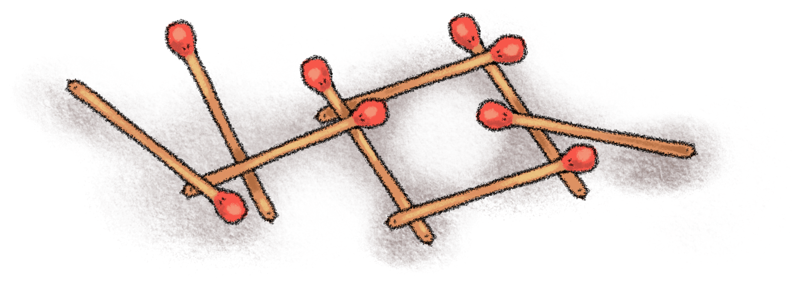

Before beginning to compose something, gauge the nature and extent of the enterprise and work from a suitable design. (See Chapter II, Rule 12.) Design informs even the simplest structure, whether of brick and steel or of prose. You raise a pup tent from one sort of vision, a cathedral from another. This does not mean that you must sit with a blueprint always in front of you, merely that you had best anticipate what you are getting into. To compose a laundry list, you can work directly from the pile of soiled garments, ticking them off one by one. But to write a biography, you will need at least a rough scheme; you cannot plunge in blindly and start ticking off fact after fact about your subject, lest you miss the forest for the trees and there be no end to your labors.

Sometimes, of course, impulse and emotion are more compelling than design. If you are deeply troubled and are composing a letter appealing for mercy or for love, you had best not attempt to organize your emotions; the prose will have a better chance if the emotions are left in disarray — which you'll probably have to do anyway, since feelings do not usually lend themselves to rearrangement. But even the kind of writing that is essentially adventurous and impetuous will on examination be found to have a secret plan: Columbus didn't just sail, he sailed west, and the New World took shape from this simple and, we now think, sensible design.